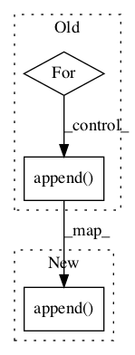

Pattern ID :148

Before Change
vnclass = self.vnclass(vnclass)
frames = list()
vnframes = vnclass.findall("FRAMES/FRAME")
for vnframe in vnframes:
example_text = self._get_example_within_frame(vnframe)
description = self._get_description_within_frame(vnframe)
pos_syntax = self._get_syntactic_list_within_frame(vnframe)
semantics = self._get_semantics_within_frame(vnframe)
frames.append({
"example": example_text,
"description": description,
"syntax": pos_syntax,
"semantics": semantics
})
return frames
def subclasses(self, vnclass):
After Change
frames = []
vnframes = vnclass.findall("FRAMES/FRAME")
for vnframe in vnframes:
frames.append({
"example": self._get_example_within_frame(vnframe),
"description": self._get_description_within_frame(vnframe),
"syntax": self._get_syntactic_list_within_frame(vnframe),
"semantics": self._get_semantics_within_frame(vnframe)
})
return frames
def subclasses(self, vnclass):
Returns subclass ids, if any exist
In pattern: SUPERPATTERN
Frequency: 4
Non-data size: 3
Instances
Fragment ID: 199591
Project Name: nltk/nltk
Commit Name: 7c419bfe10e3ceebbd4ae4c6ce826acb0cd02cdf
Time: 2017-06-16
Author: chintan.sh@media.net
File Name: nltk/corpus/reader/verbnet.py
Class Name: VerbnetCorpusReader
Method Name: frames
Fragment ID: 199589
Project Name: nltk/nltk
Commit Name: 5e233859c5fef3c6c5059fe0f8e201b9f67b4e67
Time: 2019-05-07
Author: alvations@gmail.com
File Name: nltk/corpus/reader/wordnet.py
Class Name: WordNetCorpusReader
Method Name: _synset_from_pos_and_line
Fragment ID: 199593
Project Name: nltk/nltk
Commit Name: b4f8028ef9fbb14872733bc68d5cbe40f71c0027
Time: 2007-08-27
Author: ewan.klein@gmail.com
File Name: nltk/corpus/reader/ieer.py
Class Name: IEERCorpusReader
Method Name: _read_block
Fragment ID: 199592
Project Name: nltk/nltk
Commit Name: 9e46d8c95f39c8cb5ccb9f847fe5942bde8a9957
Time: 2017-04-09
Author: vt@extrada.com
File Name: nltk/tag/tnt.py
Class Name: TnT
Method Name: _tagword